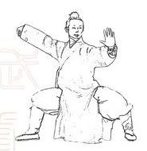

Home
Classes
Youth Tai Chi
Yang Style (24 Form)
Chen Style
Instructor
Equipments
Contact
Instructor
Calvin Lin
Currently a Grade 10 student at University Hill Secondary;
Participated in many Wushu & Tai Chi competitions, and won numerous awards.